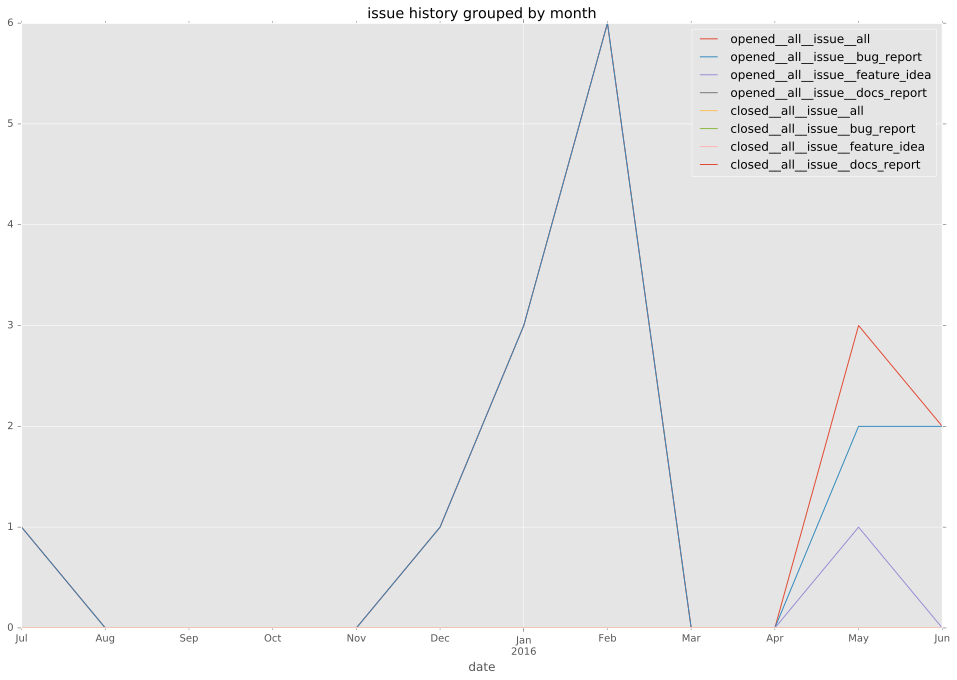
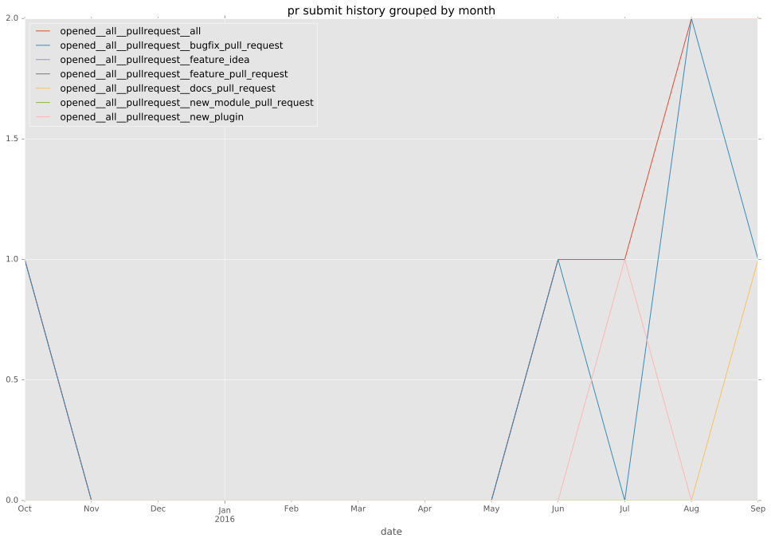
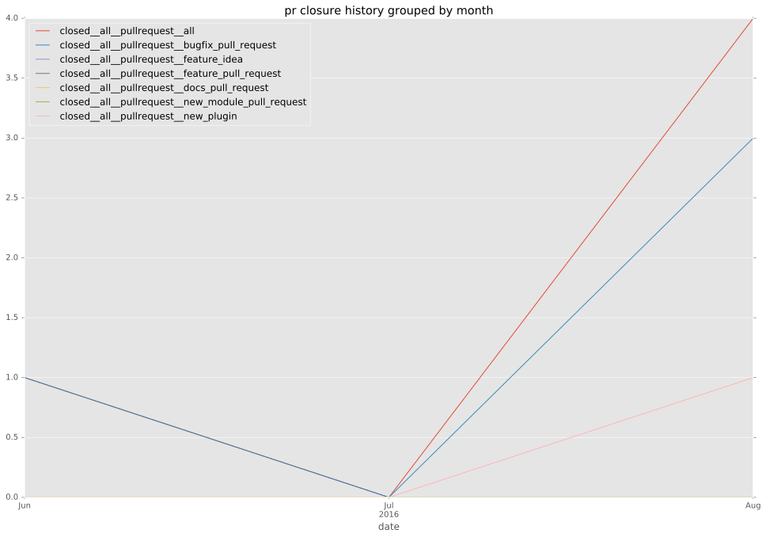
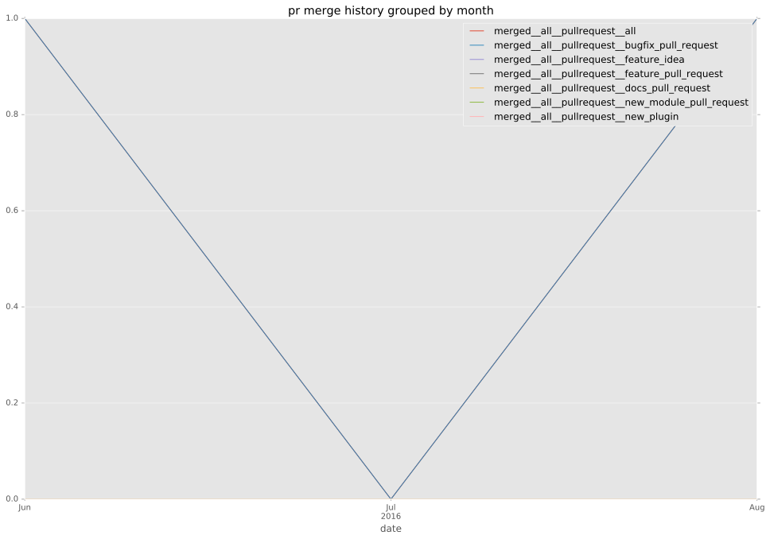
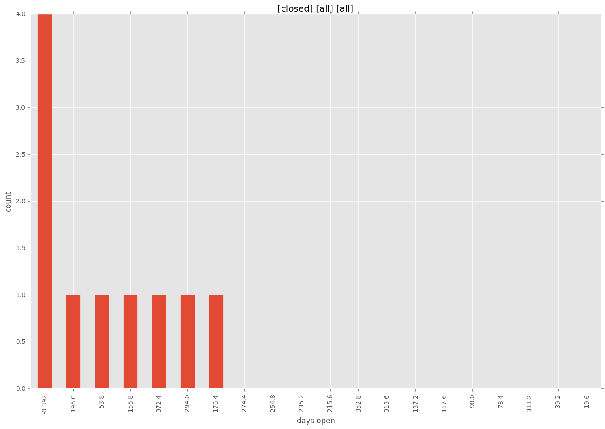
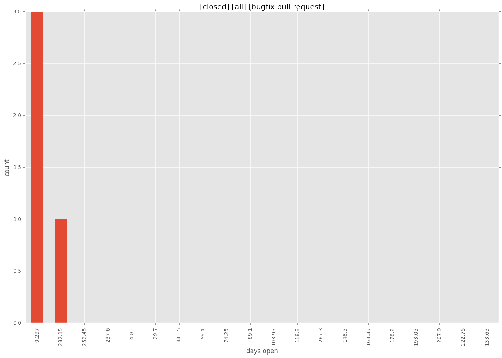
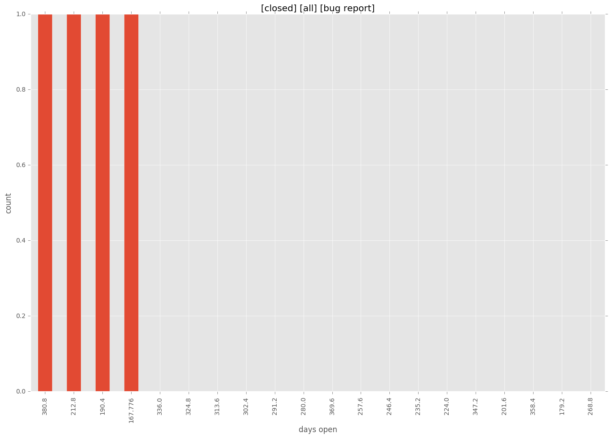
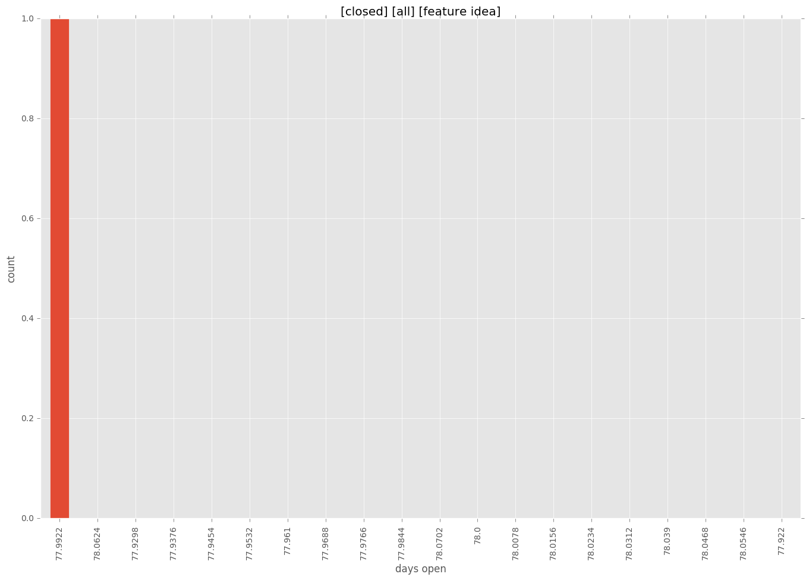

authors
- cove
- joshuaconner
- softzilla
- ThomasSteinbach
- zfil
- dusdanig
maintainers
contributors
- awasilyev : 5 commits
- steveeJ : 7 commits
- omarkhan : 4 commits
- leonty : 8 commits
- moncho : 1 commits
- bobrik : 6 commits
- awesomefireduck : 1 commits
- tpaz : 4 commits
- jimi-c : 8 commits
- qiluo-msft : 1 commits
- fabianvf : 1 commits
- simono : 4 commits
- chouseknecht : 3 commits
- mattjbray : 7 commits
- larsks : 5 commits
- nemunaire : 6 commits
- mpdehaan : 2 commits
- dkerwin : 7 commits
- weitzj : 1 commits
- justnom : 3 commits
- joshuaconner : 52 commits
- pborreli : 3 commits
- hutchic : 1 commits
- rtnpro : 1 commits
- jctanner : 2 commits
- AndrewPashkin : 7 commits
- jmoretti : 2 commits
- discordianfish : 3 commits
- Igelko : 1 commits
- ryanwalls : 9 commits
- mscherer : 4 commits
- jquadrin : 8 commits
- daviddyball : 8 commits
- cove : 98 commits
- gesellix : 6 commits
- SamYaple : 8 commits
- smashwilson : 148 commits
- PikachuEXE : 4 commits
- schlueter : 1 commits
- mlosev : 14 commits
- ThomasSteinbach : 2 commits
- berlic : 1 commits
- pmyjavec : 2 commits
- abadger : 122 commits
- mantiz : 3 commits
- omriiluz : 1 commits
- bcoca : 11 commits
- mtpereira : 2 commits
- wrouesnel : 2 commits
- kaczynskid : 2 commits
- jhaals : 4 commits
- Yannig : 2 commits
- gottwald : 4 commits
- lorin : 1 commits
- dddpaul : 7 commits
- softzilla : 10 commits
total issue counts
pullrequest: 7
docs pull request: 1
bugfix pull request: 5
feature idea: 1
issue: 16
new plugin: 1
bug report: 15
issue history

pullrequest history



days open by issue type
all
count: 12
std: 136.666814486
min: 0
max: 392
median: 46.5
mean: 113.0
pullrequest
count: 0
std: nan
min: nan
max: nan
median: nan
mean: nan
docs pull request
count: 0
std: nan
min: nan
max: nan
median: nan
mean: nan
bugfix pull request
count: 6
std: 121.168752848
min: 0
max: 297
median: 0.0
mean: 49.6666666667
feature idea
count: 1
std: nan
min: 78
max: 78
median: 78.0
mean: 78.0
issue
count: 0
std: nan
min: nan
max: nan
median: nan
mean: nan
new plugin
count: 1
std: nan
min: 15
max: 15
median: 15.0
mean: 15.0
bug report
count: 4
std: 102.239506389
min: 168
max: 392
median: 202.5
mean: 241.25
closures grouped by total days open



